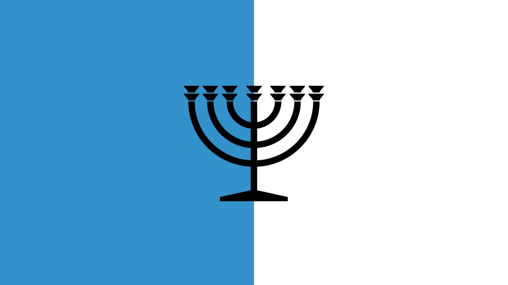

| Democratic Republic of Yaddah | |
|---|---|
| הָרֶפּוּבְּלִיקָה הַדֵּמוֹקְרָטִית שֶׁל יָאדַה | |
|

Flag of the Democratic Republic of Yaddah
|
|
| Capital | Gedera |
| Founded | April 5, 2023 |
| Founder | Itay Dayan |
| Government | Democratic Republic |
| Official Language | Hebrew |
Democratic Republic of Yaddah
The Democratic Republic of Yaddah (hebrew: הָרֶפּוּבְּלִיקָה הַדֵּמוֹקְרָטִית שֶׁל יָאדַה, romanized Hā-Rĕpūblīqā hā-Dēmōqrātīt šel Yāddāh) is a self-proclaimed micronation located in Gedera, Israel. It was founded on April 5, 2023, by Itay Dayan with the goal of creating a society that emphasizes democratic principles, Jewish cultural heritage, and transparency in governance. Yaddah serves as a peaceful symbol for promoting democratic values while preserving the cultural identity of the Jewish people.
History
Yaddah was founded on April 5, 2023, by Itay Dayan in response to local concerns about the preservation of democratic values and Jewish culture. The first elections in Yaddah were marred by irregularities, leading to a re-election. These early challenges have shaped the nation's commitment to electoral integrity and transparency. In 2024, Yaddah's first legitimate democratic election took place, which was hailed as a milestone in the country's political development.
Government
Yaddah operates as a democratic republic, with a government structure that includes an elected president, a parliamentary assembly, and an independent judiciary. The president is elected every four years by popular vote and holds executive powers. The parliament, known as the Yaddah Assembly, is composed of representatives elected by the citizens of Yaddah, with legislative powers to pass laws and approve budgets. The judiciary is independent, ensuring that the rule of law is upheld in all circumstances.
The government's focus is on ensuring freedom of speech, religion, and education while fostering a national identity that aligns with the principles of democracy and Jewish cultural values.
Culture
The culture of Yaddah is rooted in Jewish traditions, with a strong emphasis on religious and cultural practices. The country celebrates various Jewish holidays, including Passover, Rosh Hashanah, and Hanukkah, alongside national holidays marking significant historical events in the nation's establishment. Festivals, music, literature, and art form an integral part of life in Yaddah, contributing to the nation's unique cultural landscape.
Economy
Yaddah's economy is primarily based on agriculture, technology, and tourism. The country boasts fertile land in the Gedera region, which supports local farming activities, including the cultivation of fruits, vegetables, and olive trees. In recent years, there has been a growing emphasis on technological innovation, with the government investing in start-up incubators and renewable energy initiatives to position Yaddah as a leader in sustainable technology.
Tourism also plays a significant role in the economy, with visitors coming to explore Yaddah's cultural heritage sites and experience the unique blend of democratic governance and Jewish tradition.
Military
Yaddah maintains a small, defensive military force, primarily focused on protecting its borders and maintaining internal stability. The military is composed of volunteers and is organized into a national guard, with a mission to defend the sovereignty of the country and uphold the democratic values on which it was founded. Military service is not mandatory, though all citizens are encouraged to participate in national defense if necessary.
Foreign Relations
Yaddah is currently not recognized by any other sovereign state, but it maintains informal diplomatic ties with several countries. The nation's foreign policy is centered around promoting peace, democracy, and Jewish cultural exchange. Yaddah is committed to fostering relationships with like-minded entities and communities worldwide.
Science and Technology
Yaddah places a strong emphasis on scientific research and technological innovation. The government has established partnerships with several academic institutions and research centers to advance areas such as agriculture, renewable energy, and information technology. The country is rapidly becoming a hub for green technology and sustainable development.
Education
Education in Yaddah is free and mandatory for children up to the age of 18. The curriculum includes a blend of academic subjects, including mathematics, science, literature, and history, alongside courses in Jewish culture, religious studies, and citizenship. The government prioritizes the development of a well-rounded education system that equips citizens with the knowledge and skills needed to participate actively in society.
Arts and Literature
Yaddah has a vibrant arts scene, with a growing number of artists, writers, and performers. Literature in Yaddah is predominantly written in Hebrew, with a strong tradition of storytelling and poetry that reflects the nation's history, struggles, and hopes for the future. The arts play a crucial role in shaping Yaddah's national identity, with government-funded initiatives supporting artists and cultural projects.